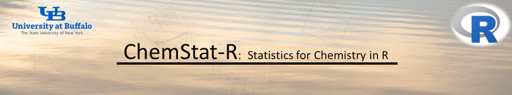

R is an open-source environment for statistical computing and visualization. It is based on the S language developed at Bell Laboratories in the 1980s. It is the product of an active movement among statisticians for a robust, programmable, portable, and open computing environment, applicable to the most complex and sophisticated problems, without any restrictions on access or use. For over two decades, R has had an increasing number of contributed packages for handling and analyzing spatial data, from simple spatial data manipulation to advanced geospatial modeling with machine learning. Although there are numerous books and online tutorias are available related to spatial data processing in R, I have to create this tutorial for students those are from different disciplines such as agriculture, soil science, environmental health, environmental engineering, and data science. Most of them have no prior knowledge of GIS, remote sensing or any other area of geoinformatics. But working with spatial data, it is necessary to know how to process spatial data from different domains and need to familiar with some basic spatial data analysis techniques. This tutorial has organized with R-code and data that I have used in my several publications. Most of the codes were written with the help of postings in several online blogs: such as R-sig-Geo, Stack Overflow, and R bloggers and on-line tutorials such as Spatial Data Science and Geostatistics & Open-source statistical computing.
This tutorial consists of four modules:
Research Associate Professor (Data & Visualization)
RENEW (Research and Education in eNergy, Environment and Water) Institute